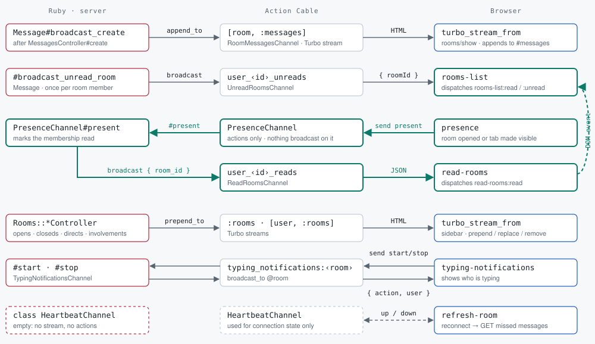

Friday, 09 October 2026, 10:30 IST. Ends at 11:15 IST.
Post something in the room.
The chat on the second screen. You've been using it since yesterday morning.
The room you've been chatting in
since the doors opened
requests
96,102
people · messages
83 · 181
WebSockets opened
1,583
server errors · restarts
2 · 0
memory, right now
174 MiB
p95 handler time
5.5 ms
# the room's own dashboard, /runtime
/app/campfire ELF native executable
process maps no Ruby interpreter,
no libruby
processes 1, with 8 threads
container limit 2 cores, 1 GiB
CPU right now 1.5% of one core
Basecamp's Campfire, plus twenty-three commits from the organizers —
their sign-in, their branding, this dashboard. Written in Rails. Then compiled.
One process. No Ruby in it. No Redis. You've been the test.
alternate · if the room fell over
The room you've been chatting in
It went down — when, and why, one line.
Every test Basecamp wrote passes. A comparator checks every page against real Rails.
None of them found this. You did.
*200
START, CLA
TAD A
TAD B
DCA SUM
CLA HLT
A, 7
B, 5
SUM, 0
Same bits. One line still equals one instruction.
The assembler gave them names.
generation three · 1957 · FORTRAN
C SUM FIVE NUMBERS AND PRINT THE TOTAL
DIMENSION VALS(5)
TOTAL = 0.0
DO 20 I = 1, 5
20 TOTAL = TOTAL + VALS(I)
PRINT 30, TOTAL
30 FORMAT (1H , 8HTOTAL IS, F10.2)
END
In assembler, one line was one instruction. Here a line is a formula,
and a compiler decides.
The objection in 1957: no compiler could emit code fast enough to be worth using.
Backus's team spent most of their effort answering it.
Backus's number
If FORTRAN produced an object program only half as fast as its hand coded counterpart,
then acceptance of our system would be in serious danger.
— John Backus, The History of FORTRAN I, II, and III
Campfire · same machine, same harness · req/s
Rails
transpiled to Ruby
hand port
room page
291
4,138
3,766
messages page
604
7,602
7,920
sidebar
510
3,461
9,399
Ahead on one page, level on one, 2.7× behind on one. The day before, the room page was 4.4× behind.
The bar, from someone who has already written the fast version: getting close may be good enough.
FORTRAN didn't close that gap with one team.
It closed it with everyone who used it.
And SQL — the one that survived, which is the tell.
A database. Some forms. Some reports. Some rules.
The only domain anyone has ever gotten a declarative language to work in.
It is also, exactly, the domain of Rails.
The ladder stopped
1945 machine code ENIAC, toggled in
1949 assembler names for the bits
1957 FORTRAN a compiler decides
1975 FOCUS · SQL say what, not how
1995 the last new 4GL ships
2004 Rails
2026
Three generations in twelve years. A fourth that took twenty, and died.
Then nothing — at the language level.By 2004, even the word was gone.
Where the fourth generation went
Article.where("published_at < ?", Time.now) # SQL, in a string
%r{^/articles/(\d+)$} # a regex, in a literal
field :email, String, null: false # GraphQL, in a class body
data-action="click->composer#send" # Stimulus, in an attribute
has_many :comments # ?
It didn't die. It moved in — as a guest inside a third-generation host.
And the host's tools can't see into a guest.
Your Ruby LSP cannot type that SQL string.
Eight lines
app/models/message.rb · the room you've been chatting in
A 4GL statement, delivered as a library.
The same line a Progress programmer wrote in 1990,
and it took an afternoon for the same reason.
A framework is a language without a compiler.
The bill
Three things a compiler does that a library cannot.
A compiler answers once. A library re-answers.
A compiler sees the whole program. A library sees the call it's in.
A compiler can change the target. A library is bound to its host.
Rails is to web applications what SQL is to data.
SQL has a compiler. It's called the query planner.
Who here has ever tuned a query without changing the SQL?
So why did they die?
Not because declarative was wrong.
The compilers were the expensive part. Every target was a team.
Revenue was runtime licenses. No reason to compile you onto anyone else's platform.
Green screens → Windows → the web. One target, one vendor: they didn't move.
Except one
SQL had many vendors and no owner.
Competitors shared the cost of the compiler. When the platform moved, SQL moved with it.
IBM's CSP ran on every IBM platform.
Many targets. One owner. It never died, and it never became SQL.
Why now?
Fifty years of the same dream. What changed?
If Rails is a 4GL that is still an interpreter, the question of the 1990s is back.
Can you afford the compiler?
What the same job cost this year
Ten targets, started by one person with agents. No team — at first.
Issues flowing both ways with Matz's compiler — including four Matz filed against mine.
The ladder stopped because the compiler was the expensive part.
It isn't anymore.
why now
Agents build it. The compiler ships it.
This compiler was written with agents. So were most of the 357 pull requests from other people.
Every one held the agent to a reference: real Rails, Basecamp's tests, a before-and-after run.
What ships is the compiler's output, not the agent's.
The as-if rule
A compiler may change anything you can't observe.
C++ writes down what "observable" means, in a standard. Ruby doesn't have one.
So the standard is the app: real Rails beside the binary,
and every test Basecamp wrote.
406 of 406, on the binary. Their assertions, not mine.
What sits at the top of the drill?
Campfire
in Rails
compiled to C
size
~60k tokens
~4M tokens
lines that mention boosts
20, in 13 files
1,220
Same Rails twice: the same C. Same prompt twice: two programs.
There is no as-if rule for your English.— Aaron Patterson, Rails World 2026 closing keynote
why I care
A requirement nobody anticipated
I wrote a Rails app to schedule dance competitions. Then the judges needed to score with no wifi.
Offline means the browser, or a phone. Places Ruby doesn't run.
A new requirement changed the target, and the target changed the language.
Port it, and now you keep two apps. Compile it, and you still keep one.
why now · from a prompt to a binary
A prompt becomes a Rails app. Could it become a binary, too?
This week
A filter that names a method nothing defines is now an error. Rails answered 500;
the compiled app had silently dropped the guard.
Rails 8's authentication generator now compiles. 11 of the 12 tests it writes pass on the binary.
Rails' own defaults found in an afternoon what months of a hand-written app hadn't.
Not yet
Nobody has run a generator's real output through the compiler.
root_url with no root route is still only a warning.
Whether a binary helps someone who described their app in a sentence.
What we could build: a corpus of generated apps → fix what blocks them →
check in the verify loop → a compiled image at export.
An invitation, not an announcement.
Bigger than Rails
A Rails app is more than Ruby.
the seams
The guests talk to each other
"rooms-list:unread@window->badge-dot#update" # JavaScript, wired in a Ruby helper
<a action="soft-keyboard#open"> # ERB, read by Stimulus
field :first_voter, UserType, null: false # GraphQL, answered in Ruby
before_action :authenticate_user! # a gem's method, named by an app without it
Each guest has its own parser now: Prism, Herb, Oxc, graphql-ruby.
Each one checks its own notation.
Nothing checks the seams. Three of those four lines are bugs.
And a differential oracle is blind wherever both sides run the same code.
the seams · strings all the way down
━━ declared in a Ruby helper━━ declared in an ERB template━━ outlet
Eight of the eleven links live in Ruby helpers —
invisible to any JavaScript tool and any ERB tool. Three parsers could see them together.
Should we build that? Herb in Rails 8.2 closed yesterday.
the seams · a typed contract, half checked
Resolvers have types too
graphql-ruby checks every query against the schema.
Whether the Ruby behind each field keeps that contract, you find out when a request gets there.
# three mistakes I planted in a tutorial app's LinkType
link_type.rb:8 error no known method `title` on Link
link_type.rb:9 warning `first_voter` is null: false but can resolve to nil
link_type.rb:17 error Integer + String
From the schema's roots down, without booting the app. With the denominator:
graphql: 38 field(s): 3 checked, 9 on types nothing reaches,
26 skipped (computed include 26)
A quiet run proves only what was followed.
bigger than Rails · what combining the parts buys

Open a room, and its unread badge clears in every tab you have open: browser, channel, broadcast,
browser. No single file shows that loop.With Prism, Herb and Oxc together, this
picture would be generated, not drawn.
Who builds it?
A different ladder
pull requests merged
from people who aren't me
2026-09-18 3 the first one
2026-09-21 30
2026-09-28 40
2026-09-30 104
2026-10-05 258
2026-10-08 357 from seventeen people
And 33 forks, most of them people I've never met.
When I started writing this talk, there was nothing to put on this slide.
What they brought
A Sorbet-typed app: about 1,160 emitted files.
A Rails 8 app: 255 models and controllers, 286 templates, 84 gems.
An app with 96,000 Ruby files.roundhouse check
went from a projected two hours to seven minutes — because someone ran it there and fixed what was slow.
Then a hundred more commits.
And what they built: constant resolution handed to Rubydex, a CI that does about a
quarter of the work, and a stranger's four-line fix to the collector.
what a contributor asked for
Keep the gems
Did some things based on Sam's roundhouse which is really really promising.
— Tobi Lütke, 6 October 2026
He ported Campfire to Ruby without Rails, and made it 15–27× faster.
What he wants from this compiler: that kind of speed from Rails itself, transpiled to Ruby,
deterministically, keeping every gem.
Mastodon's 113 runtime gems
no dependency on Rails or Active Support
90
Active Support or Active Model only
6
depend on Rails
17
The cost being removed is Rails' per-request work, not Ruby.
A rule a newcomer wrote
A pull request made check quiet about a construct. The emitted program didn't run it.
The fix wasn't to reject the pull request. It was a rule for everyone:
A diagnostic you remove is a claim that the emitted program runs.
— AGENTS.md, invariant 6, added 2026-09-28
Now every such change has to come with a test that runs the output.
The project got stricter because someone new showed up.
And around it, things moved on their own
Spinel, Matz's compiler: issues and fixes flowing both ways, daily.
IronRuby, revived on .NET this September, runs the emitted Campfire — and shipped a release with our fixes in it.
Spinel packages for Postgres and Nokogiri, with contributors I hadn't met a month ago.
Rubydex now resolves every constant Roundhouse reads.
None of these is mine. That's the point.
Many targets. Many keepers.
Matz keeps the compiler. Basecamp's tests define correct. The maintainer of Roda and Sequel
wrote the spec for a Rails-to-Roda converter before a line of it existed.
Seventeen people keep the rest.
CSP had the first half. SQL had both.
The bet isn't the compiler. It's the keepers.
the room, again
The chat on the second screen
Written by 37signals. Changed by the people who organized this conference: their sign-in,
their branding, their dashboard. Twenty-three commits of Rails. Then compiled.
The people building this are already in this room.
your app
The ledger
Run roundhouse check on your app. What it can't model yet, it says — on the exact line.
On one contributor's Rails 8 app, a single missing entry was 359 of 836 errors.
One line fixed 43%.
The first gaps on a real app are usually a few missing entries, not a wall.
Each one you fix is fixed for everyone.
If it serves GraphQL, send me the graphql: line.Counts and reasons, not your schema.
The journey is just beginning
Bring an app. Bring a gap. Bring a target. Bring an oracle.
Everything is public: the compiler, the benchmarks, the test lanes, these slides and their notes.
The open issues are plans, not claims. Take one somewhere I didn't think of.
Don't stop where I stopped. Don't stop where Rails stops.
today
Before five o'clock
At lunch, ask your agent to cargo install --git https://github.com/rubys/roundhouse
and run roundhouse check on your app. Or try it with no install:
the studio.
Post what it says in the room. Every gap it names is a pull request someone could write.
Find me. Or find someone on this afternoon's panel of Indian speakers and ask what they'd build.
Pune · 1987
This city has done this before
Late 1980s: India asks to buy a Cray supercomputer. The answer is no.
1987: C-DAC is founded — here, in Pune. 1991: PARAM 8000.
They didn't copy the machine they were refused.
They built a different one, together, from parts they could get — and it worked.
“Go hungry, go crazy and do something that will transform India and the world.”
the writing — intertwingly.net · Pencils Down, Notation Up · As If · The Browser Half · Generated Rails · Resolvers Have Types Too
MIT / Apache-2.0. Fork it. Slides and speaker notes are public.
encoreappendix
Why it lived where they died
The escape hatch. Hit the edge of the conventions, write a def.
Same file, three lines down.
No vendor. No runtime license. A host language anyone could run anywhere.
Exactly the two things that killed the 4GLs.
It was the right trade in 2004.
appendix
Three ways to ship the next release
compile
port again
maintain the port
a Campfire change lands
once
once, plus what the prompt restates
twice
an improvement helps
every app on the compiler
every app on the framework
this app
the Rails app as oracle
required
required
optional — so it decays
appendixbigger than Rails · the parts already exist
Every piece has a keeper. Nobody holds them together.
Ruby: Prism, and Rubydex for constants.
ERB as HTML: Herb, in Rails 8.2.
JavaScript: Oxc.
GraphQL: graphql-ruby's schema.
Native code: Spinel.
Combined: a check across the seams, a language server that jumps from a Ruby helper to the
JavaScript it wires, a request trace that follows a broadcast into the browser.
appendix
What they built that I wouldn't have
Constant resolution handed to Rubydex, an indexer someone else maintains.
CI rebuilt so a pull request runs a compact floor, with the full matrix on request
— about three-quarters less runner work, by their estimate.
Case/in pattern matching. Enums the way Rails really does them. Request params that run.
A stranger profiled the binary and deleted four lines from the collector.
Most of them used agents, and every one of them held the agent to a reference.
Why nobody noticed
has_manyisdefine_method.
Lisp did language-as-library with macros, at compile time. Ruby did it at runtime.
At the source level both are method calls, so the boundary is invisible —
and it runs through the middle of every model, a def three lines below a belongs_to.
Re-answered
Rails answers belongs_to at boot. Then, every request, it re-answers
the questions that follow from it: which columns, which table, which route, which template, which filters.
Campfire, same CRuby, same YJIT, same Puma — only the framework melted:
14× on the room page, 13× on the messages feed.
appendixwhy is there no Redis?
GVL
→ must fork for cores
→ separate heaps
→ need a broker
→ Redis
That isn't a chat design. It's a runtime workaround, and the application inherited it.
Remove the first link and the rest falls out.
appendixthe concurrency shape
Threads, fibers, processes
The compiled binary runs green threads in one process. At twelve workers the collector
has the world stopped more than half the time.
Under load, fibers measured faster than threads on both apps we tried.
One heap per core might be the answer. I don't know yet.
When Rails Met Fibers: Migrating Sidekick from Puma to Falcon.
appendixagents in the loop
A checker that doesn't need the app running
Zero error diagnostics is the contract. It answers in seconds, from source:
which filters run, where the N+1 is, what can be nil.
An agent that writes Rails can ask it before it runs a single test.
In our trials, agents reached for it unprompted four times in five.
Agents on Rails · Loop Engineering: Teaching an AI Agent to Check Its Own Homework ·
From Prompt to Rails · RubyLLM 2.0: Beyond Agents.
appendixre-answered · the receipt · messages/_message.html.erb, once per message
Rails, every request
# which route: to_param on each model, an options
# hash, RouteSet#url_for, Journey's formatter
room_at_message_path(message.room, message)
# which table, which columns: Association#reader,
# load_target, a scope, the StatementCache
message.room
Lowered, once
def self.room_at_message_path(room_id, message_id)
"/rooms/#{room_id}/@#{message_id}"
end
RouteHelpers.room_at_message_path(
message.room.id, message.id)
Db.prepare("SELECT id, created_at, creator_id, name,
type, updated_at FROM rooms WHERE id = "
+ Db.escape_int(@room_id) + " LIMIT 1")
appendixsees the whole program
What a library is not allowed to do
render(template, locals) → String # what every partial does
render(template, locals, buffer) → nil # since 7.1; only streaming uses it
A compiler sees every caller, so it can rewrite every append site to write into one buffer.
2.4× on the page, from that alone.
appendix
Martin, 1982. Rails World, 2026.
"The human reads the spec, an agent writes the 3GL" is James Martin's pitch,
restated almost word for word: Application Development Without Programmers.
This time it's true. The difference isn't the promise. It's who owns the compiler.